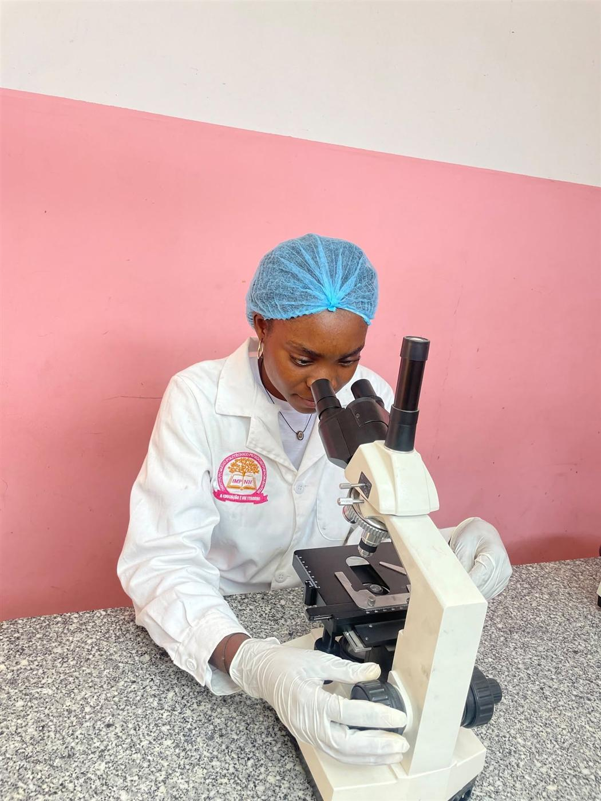
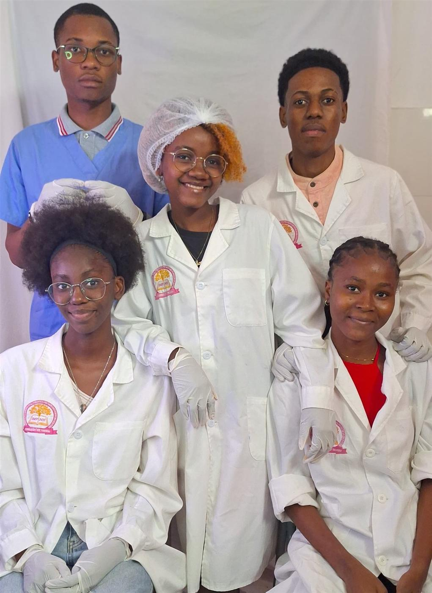

Polo I
Administração, Serviços e Saúde
Formação orientada para áreas administrativas, empresariais e de saúde, reunindo diferentes opções para o desenvolvimento académico e profissional.
- Administração e Serviços
- Saúde

Instituto Politécnico Privado
Construímos horizontes de conhecimento e formamos profissionais preparados para os desafios de um mundo em constante transformação.

Ano lectivo 2026/2027Quem somos
O Instituto Politécnico Privado Novos Horizontes é uma instituição orientada para a formação académica e técnico-profissional, para jovens que querem construir um futuro com conhecimento, competência e responsabilidade.
A oferta está organizada em dois polos: Administração, Serviços e Saúde num, e as áreas técnicas no outro (Informática, Mecânica, Construção Civil, Electricidade, Electrónica e Telecomunicações).
O que nos orienta é simples. Valorizar o conhecimento, formar para a vida e desenvolver competências que a sociedade angolana realmente precisa.
Dois polos de formação
Cada polo reúne um conjunto de áreas. Comece pelo que mais lhe interessa e veja os cursos de cada um.

Polo I
Formação orientada para áreas administrativas, empresariais e de saúde, reunindo diferentes opções para o desenvolvimento académico e profissional.

Polo II
Formação técnica em áreas ligadas à informática, mecânica, construção civil, electricidade, electrónica e telecomunicações.
Oferta formativa
Toque numa área para ver os cursos que a compõem.
O que nos distingue
Valorização do conhecimento e da qualidade no processo de formação.
Desenvolvimento académico, humano e profissional.
Compromisso com responsabilidade, dedicação e qualidade.
Valorização de metodologias modernas e preparação para novos desafios.
Ano Lectivo 2026/2027
Matrículas para a 10ª, 11ª, 12ª e 13ª classe nos dois polos. O preçário completo está publicado, sem letras pequenas.
Onde estamos
Duas referências para chegar até nós.
Localização 1 · Talatona, Luanda
Localização 2 · Talatona, Luanda

Construímos horizontes de conhecimento e formamos líderes para transformar o futuro.